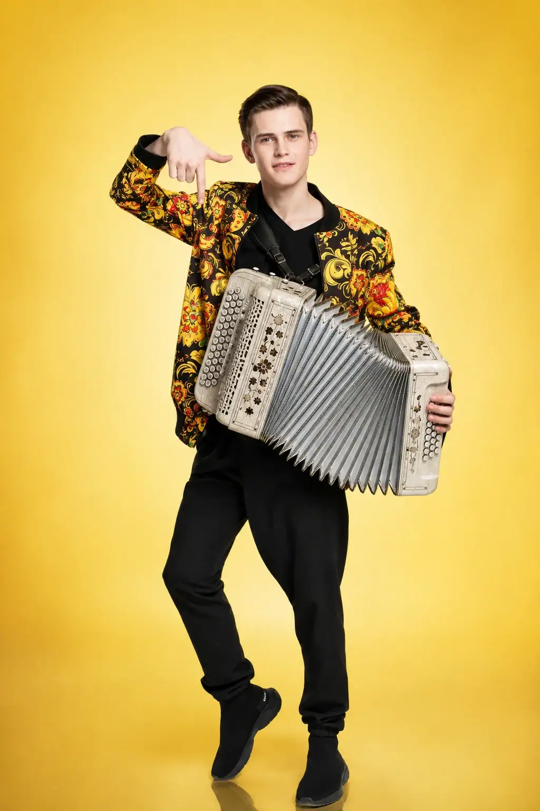

07 / 07 · Гармонист
Павел
Фомин
Gармонь Drive
07
ПЕРСОНАЛЬНАЯ СТРАНИЦА
Павел
Фомин
Выпускник РАМ им. Гнесиных (класс старшего преподавателя Уханова П. В.), серебряный призёр Чемпионата мира по баяну, аккордеону и гармони «Трофей мира» (г. Самара, 2013 г.), золотая медаль Четырнадцатых молодёжных Дельфийских игр России (г. Орёл, 2015).
Живой звук. Своя исполнительская манера. Один общий драйв.Пригласить Gармонь Drive ↗